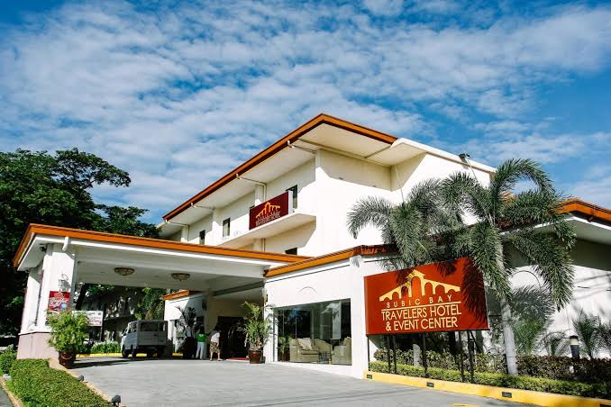
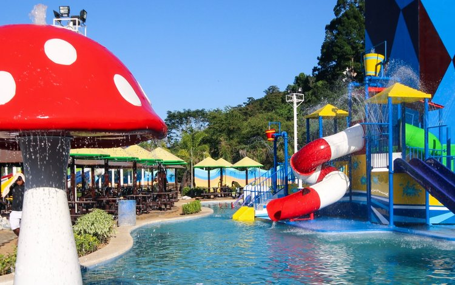

 <!--Explore-->
    <section class="recommendation-section" id="recommendation">
        <section class="content-section">
            <div class="section-content">
                <h2>Explore</h2>
                <p>Find places worth visiting in Olongapo.</p>

                <div class="explore-button">
                    <ul>
                        <li><button class="label active" type="button" data-filter="all">All</button></li>
                        <li><button class="label" type="button" data-filter="destinations">Destinations</button></li>
                        <li><button class="label" type="button" data-filter="food">Food</button></li>
                        <li><button class="label" type="button" data-filter="stay">Hotels &amp; Services</button></li>
                        <li><button class="label" type="button" data-filter="activities">Activities</button></li>

                    </ul>
                </div>

                <p id="explore-status" class="nearby-status" role="status" aria-live="polite"></p>
                <div id="explore-grid" class="explore-grid">

                    <a href="https://www.google.com/maps/search/?api=1&amp;query=Rizal+Triangle+Olongapo" target="_blank" rel="noopener"
                        class="explore-card" data-cat="destinations" data-query="Rizal Triangle, Olongapo City" data-osm="Rizal Triangle"
                        data-desc="A small park surrounded by one of Olongapo's busiest districts. It is known for its bars, restaurants and nightlife, a legacy of the years when the nearby U.S. Naval Base Subic Bay was active.">
                        
                        <span class="tag">Destination</span>
                        <div class="explore-body">
                            <h3>Rizal Triangle</h3>
                            <p>A lively area for street food, bars and people-watching in the heart of the city.</p>
                        </div>
                    </a>

                    <a href="https://www.google.com/maps/search/?api=1&amp;query=Magsaysay+Drive+Olongapo" target="_blank" rel="noopener"
                        class="explore-card" data-cat="food" data-query="Magsaysay Drive, Olongapo City" data-osm="Magsaysay Drive"
                        data-desc="Restaurants, caf&eacute;s and shops lined up along Magsaysay Drive, one of the city's main roads. An easy area to walk through when you are looking for a meal or a snack.">
                        
                        <span class="tag">Food</span>
                        <div class="explore-body">
                            <h3>Magsaysay Drive Eats</h3>
                            <p>Restaurants, caf&eacute;s and shops lined up along the city's main road.</p>
                        </div>
                    </a>

                    <a href="https://www.google.com/maps/search/?api=1&amp;query=Barrio+Barretto+Olongapo" target="_blank" rel="noopener"
                        class="explore-card" data-cat="destinations" data-query="Barrio Barretto, Olongapo City" data-osm="Barretto"
                        data-desc="A coastal barangay on Subic Bay with a long stretch of beachfront resorts, restaurants and bars. A common choice for a weekend swim, a seafood meal or a short stay by the sea.">
                        
                        <span class="tag">Destination</span>
                        <div class="explore-body">
                            <h3>Barrio Barretto</h3>
                            <p>A beachfront stretch with seaside dining, sunsets and places to stay.</p>
                        </div>
                    </a>

                    <a href="https://www.google.com/maps/search/?api=1&amp;query=Hotels+in+Olongapo+City" target="_blank" rel="noopener"
                        class="explore-card" data-cat="stay" data-query="Hotels in Olongapo City" data-osm=""
                        data-desc="Hotels, inns and resorts across Olongapo City and along the Subic Bay shoreline. Check each place for rooms and rates before you go.">
                        
                        <span class="tag">Hotels &amp; Services</span>
                        <div class="explore-body">
                            <h3>Stay &amp; Relax</h3>
                            <p>Hotels, inns and resorts for every budget, close to the city's best spots.</p>
                        </div>
                    </a>

                    <a href="https://www.google.com/maps/search/?api=1&amp;query=Subic+Bay" target="_blank" rel="noopener"
                        class="explore-card" data-cat="activities" data-query="Subic Bay" data-osm="Subic Bay"
                        data-desc="Boat rides, beach days and outdoor fun around Subic Bay, with plenty to try for families and groups of friends.">
                        
                        <span class="tag">Activities</span>
                        <div class="explore-body">
                            <h3>Subic Bay Adventures</h3>
                            <p>Boat rides, beach days and outdoor fun around beautiful Subic Bay.</p>
                        </div>
                    </a>

                    <a href="https://www.google.com/maps/search/?api=1&amp;query=Street+food+Olongapo+City" target="_blank" rel="noopener"
                        class="explore-card" data-cat="food" data-query="Street food, Olongapo City" data-osm=""
                        data-desc="Grilled favorites, snacks and sweet treats served up by local vendors. A tasty way to get to know the city, one stall at a time.">
                        
                        <span class="tag">Food</span>
                        <div class="explore-body">
                            <h3>Street Food Crawl</h3>
                            <p>Grilled favorites, snacks and sweet treats served up by local vendors.</p>
                        </div>
                    </a>
                </div>

            </div>
        </section>
    </section>
